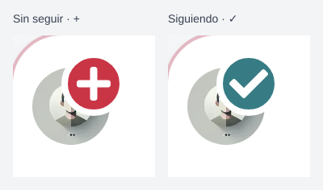
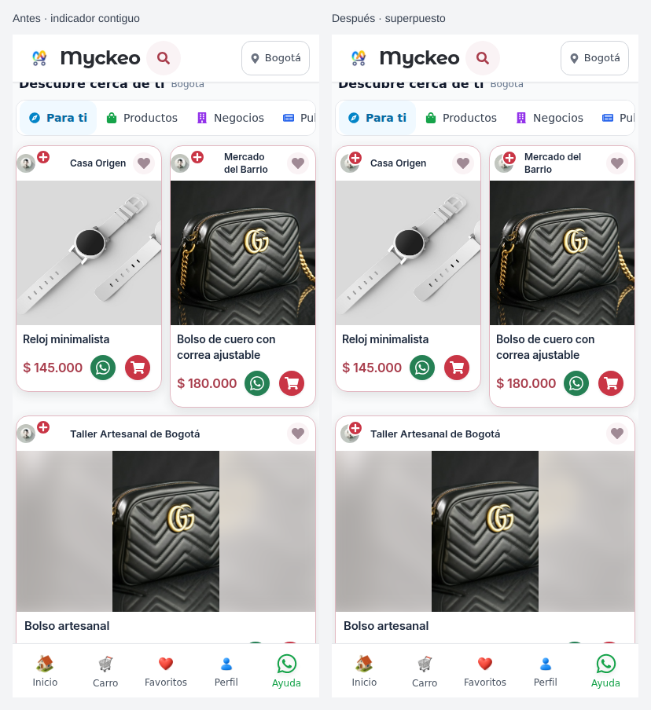
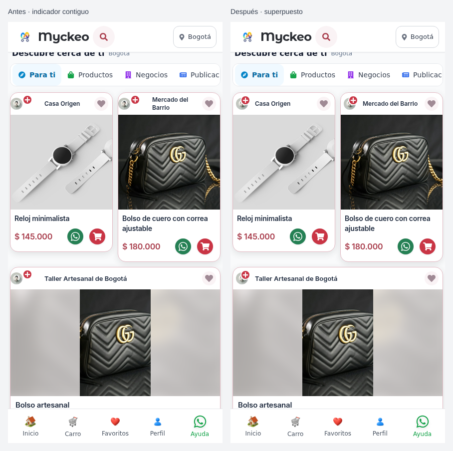
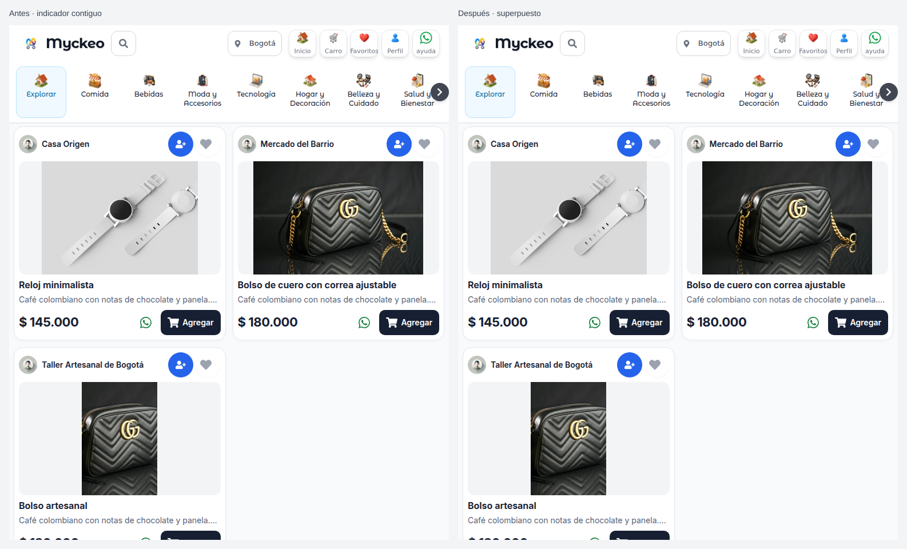
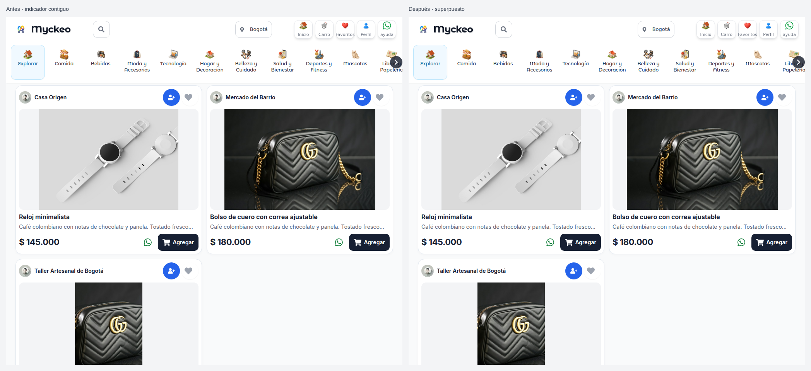
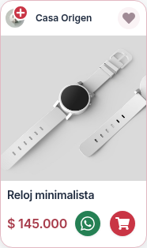
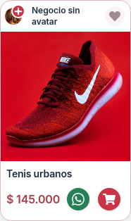
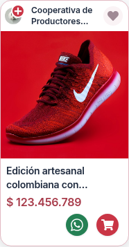
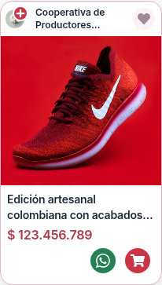

Avatar completo como un solo botón de Seguir de 44 × 44 px. Nombre como enlace independiente al perfil. Distintivo de 20 px: 53,5 % dentro del avatar circular y 46,5 % fuera. Recupera 24 px para el nombre.

Capturas de navegador a deviceScaleFactor 4; cada PNG individual contiene el objetivo de 44 px renderizado en 176 × 176 píxeles, sin recreación de la interfaz.








Componente productivo de Next.js, ruta /, con datos, sesiones y respuestas sintéticos. Misma escala y scroll de 100 px en las comparativas de viewport.